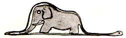

Ch1
Nuair a bhí mé sé bliana d'aois, chonaic mé, uair amháin, pictiúr
iontach i leabhar i dtaobh na foraoise darbh ainm “Scéalta fíora.”
Séard a bhí ann nathair den chineál a dtugtar boa uirthi agus
ainmhí á shlogadh aici. Sin cóip den phictiúr sin thuas.
Dúradh sa leabhar: “Slogann na nathracha boa a gcreach
d'aon ailp amháin, gan í a chogaint. Ina dhiaidh sin ní féidir leo
bogadh agus caitheann siad sé mhí ina gcodladh agus í á díleá
acu.”
Chuir sin ag machnamh mé ar na heachtraí a tharlaíonn sa
dufair agus d'éirigh liomsa chomh maith mo chéad phictiúr a
tharraingt, le pionsail daite. Mo phictiúr uimhir a haon. Seo mar
a bhí sé:

Thaispeáin mé an sárshaothar seo liom do na daoine móra
agus d'fhiafraigh mé díbh ar chuir mo phictiúr eagla orthu.
D'fhreagair siad: “Cén fáth a gcuirfeadh hata eagla orm?” Ní
hata a bhí i mo phictiúr. Picuúr ab ea é de nathair boa agus eilifint
á díleá aici. Mar sin rinne mé pictiúr den taobh istigh de nathair
boa, sa chaoi go bhféadfadh na daoine móra é a thuiscint. Bíonn
míniú de dhíth orthu i gcónaí. Seo mar a bhí mo phictiúr uimhir
a dó:

Dúirt na daoine móra na pictiúir de nathracha boa, ar oscailt
nó dúnta, a fhágáil i leataobh, agus luí isteach ina áit sin le mo
cheachtanna tíreolais, stair, uimhríochta agus gramadaí. Sin mar
a tharla gur thug mé suas do shaol breá péintéora, agus gan mé
ach sé bliana d'aois. Chuir sé beaguchtach orm an chaoiar theip
ar no phictiúr uimhir a haon agus mo phictiúr uimhir a do. Ní
thuigeann na daoine móra rud ar bith uathu féin in am ar bith,
agus tá sé tuirsiúil ag páistí bheith i gcónaí ag míniú rudaí dóibh.
Mar sin, bhí orm ceird eile a tharraingt orm féin agus
d'fhoghlaim mé le bheith i mo phíolóta eitleáin. D'eitil mé ar fud
an domhain mhóir. Agus ceart go leor, ba mhór an cuidiú dom
an tíreolas. Bhí mé in ann, d'aon amharc amháin,an tSín a aithint
ó Arizona. Tá sé sin an-úsáideach, má théann tú ar seachrán san
oíche.
Sa dóigh sin, ba mhinic mé ag plé i rith mo shaoil le daoine
tromchúiseacha. Chaith mé cuid mhór de mo shaol i measc
daoine móra. Chonaic mé iad agus mé i ngar dóibh. Níorbh
fhearrde sin an bharúil a bhí agam díobh.
Nuair a chasainn le duine acu a shíl mé a raibh beagán
tuigbheála aige, thriailinn air an pictiúr uimhir a haon sin agam,
mar choinnigh mé agam riamh é. Theastaigh uaim a fháil amach
ar thuig sé dáiríre. Ach deireadh sé liom i gcónaí: “Is hata é.” Níor
luaigh mé nathracha boa leis mar sin, ná foraoiseacha anaithnide
ná réaltaí. Labhair mé leis fá dtaobh de bhciriste, de ghalf, de
pholaitíocht agus de charbhait. Agus bhíodh an duine mór sin
thar a bheith sásta gur chas sé le duine chomh ciallmhar liom féin.